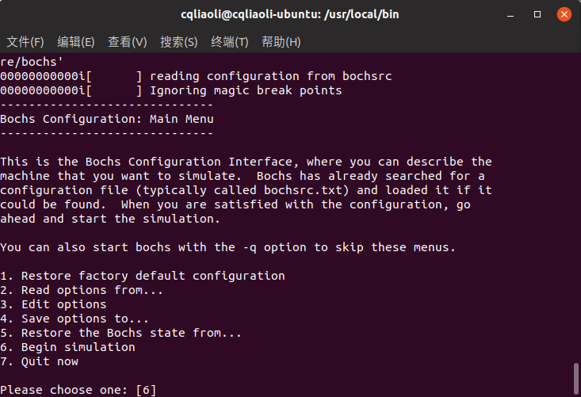
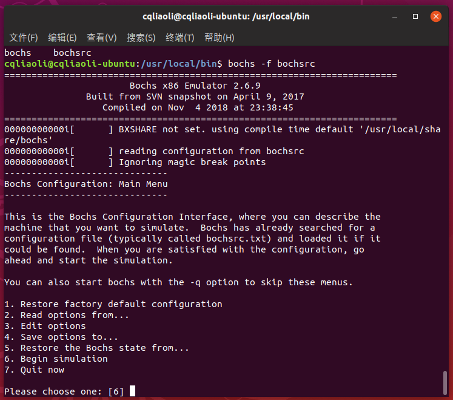
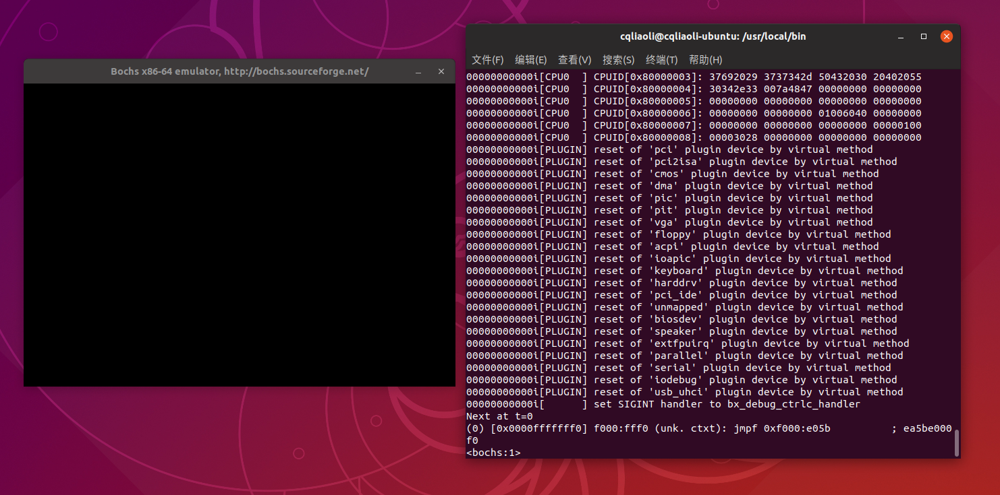
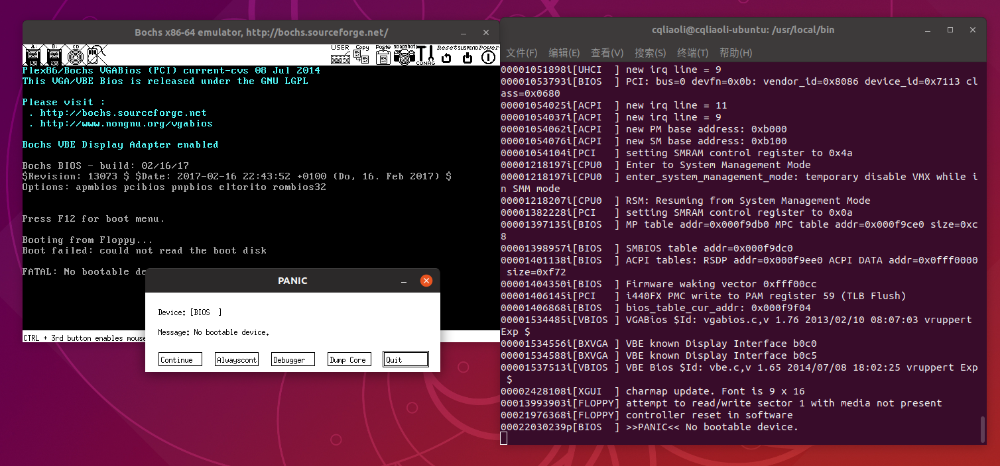
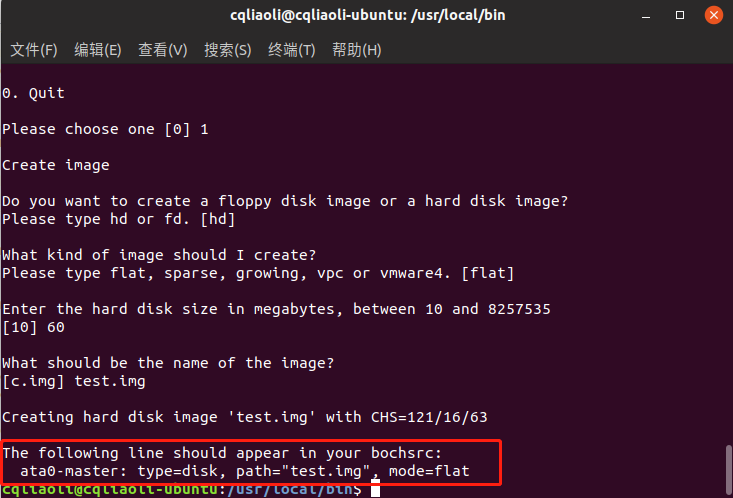
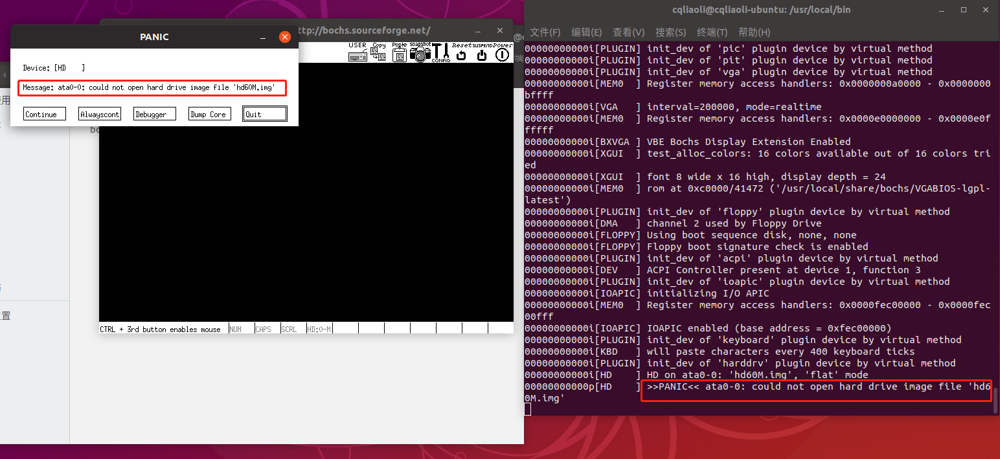
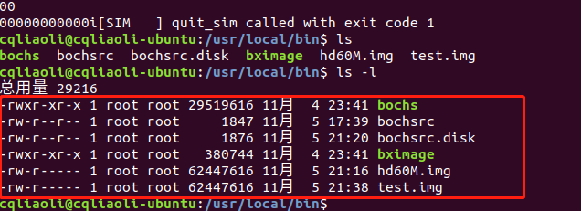

研发操作系统主要用到汇编语言和 C 语言，以及开源虚拟机Bochs，bochs可以帮助我们调试操作系统。
编译环境
操作系统
Ubuntu 18
编译器和编译工具
- gcc c语言编译器
- as 汇编语言编译器
- ld 连接器
- nasm 汇编语言编译器，用于编译Intel格式汇编语言
- make 编译构建工具
Bochs虚拟机
bochs环境安装
bochs最新版本为 bochs-2.6.9 ，配置信息如下：
//先安装 g++ libx11 等软件包
./configure --with-x11 --with-wx --enable-debugger --enable-disasm --enable-all-optimizations --enable-readline --enable-long-phy-address --enable-ltdl-install --enable-idle-hack --enable-a20-pin --enable-x86-64 --enable-smp --enable-cpu-level=6 --enable-large-ramfile --enable-repeat-speedups --enable-fast-function-calls --enable-handlers-chaining --enable-trace-linking --enable-configurable-msrs --enable-show-ips --enable-cpp --enable-debugger-gui --enable-iodebug --enable-logging --enable-assert-checks --enable-fpu --enable-vmx=2 --enable-svm --enable-3dnow --enable-alignment-check --enable-monitor-mwait --enable-avx --enable-evex --enable-x86-debugger --enable-pci --enable-usb --enable-voodoo注意 bochs --enable-plugins 选项有 bug ，所以取消了该配置项。在 make 过程中可能有错误，比如找不到以 .cpp 为后缀的文件，需要将其改为 .cc 后缀。在 /usr/local/bin 路径下执行 bochs：

Bochs 运行环境配置
安装好 Bochs 后，还需要一个硬件环境让Bochs去模拟，所以还需要配置虚拟平台环境：
# 配置1 软盘模式
# configuration file generated by Bochs
plugin_ctrl: unmapped=1, biosdev=1, speaker=1, extfpuirq=1, parallel=1, serial=1, iodebug=1
config_interface: textconfig
display_library: x
#memory: host=2048, guest=2048
romimage: file="/usr/local/share/bochs/BIOS-bochs-latest"
vgaromimage: file="/usr/local/share/bochs/VGABIOS-lgpl-latest"
# 启动方式可以是软盘或者硬盘
boot: floppy
floppy_bootsig_check: disabled=0
floppya: type=1_44, 1_44="boot.img", status=inserted, write_protected=0
# no floppyb
ata0: enabled=1, ioaddr1=0x1f0, ioaddr2=0x3f0, irq=14
ata0-master: type=none
ata0-slave: type=none
ata1: enabled=1, ioaddr1=0x170, ioaddr2=0x370, irq=15
ata1-master: type=none
ata1-slave: type=none
ata2: enabled=0
ata3: enabled=0
pci: enabled=1, chipset=i440fx
vga: extension=vbe, update_freq=5
# 模拟的cpu
cpu: count=1:1:1, ips=4000000, quantum=16, model=corei7_haswell_4770, reset_on_triple_fault=1, cpuid_limit_winnt=0, ignore_bad_msrs=1, mwait_is_nop=0, msrs="msrs.def"
cpuid: x86_64=1,level=6, mmx=1, sep=1, simd=avx512, aes=1, movbe=1, xsave=1,apic=x2apic,sha=1,movbe=1,adx=1,xsaveopt=1,avx_f16c=1,avx_fma=1,bmi=bmi2,1g_pages=1,pcid=1,fsgsbase=1,smep=1,smap=1,mwait=1,vmx=1
cpuid: family=6, model=0x1a, stepping=5, vendor_string="GenuineIntel", brand_string="Intel(R) Core(TM) i7-4770 CPU (Haswell)"
print_timestamps: enabled=0
debugger_log: -
magic_break: enabled=0
port_e9_hack: enabled=0
private_colormap: enabled=0
clock: sync=none, time0=local, rtc_sync=0
# no cmosimage
# no loader
log: -
logprefix: %t%e%d
debug: action=ignore
info: action=report
error: action=report
panic: action=ask
keyboard: type=mf, serial_delay=250, paste_delay=100000, user_shortcut=none
mouse: type=ps2, enabled=0, toggle=ctrl+mbutton
speaker: enabled=1, mode=system
parport1: enabled=1, file=none
parport2: enabled=0
com1: enabled=1, mode=null
com2: enabled=0
com3: enabled=0
com4: enabled=0
//内存
megs: 256
将上述配置保存到 /usr/local/bin 下的 bochsrc 下，然后输入 bochs -f bochsrc ：


输入 c

提示 无启动设备，那是因为在上面配置中 floppya: type=1_44, 1_44="boot.img", status=inserted, write_protected=0 我们指定了 boot.img 但是还没有生成，后续章节将制作启动盘。
除了上面提到的软盘模式，我们还可以以硬盘作为启动盘：
#配置2 硬盘启动
# configuration file generated by Bochs
plugin_ctrl: unmapped=1, biosdev=1, speaker=1, extfpuirq=1, parallel=1, serial=1, iodebug=1
config_interface: textconfig
display_library: x
#memory: host=2048, guest=2048
romimage: file="/usr/local/share/bochs/BIOS-bochs-latest"
vgaromimage: file="/usr/local/share/bochs/VGABIOS-lgpl-latest"
# 硬盘启动
boot: disk
#floppy_bootsig_check: disabled=0
#floppya: type=1_44, 1_44="boot.img", status=inserted, write_protected=0
# no floppyb
ata0: enabled=1, ioaddr1=0x1f0, ioaddr2=0x3f0, irq=14
ata0-master: type=none
ata0-slave: type=none
ata1: enabled=1, ioaddr1=0x170, ioaddr2=0x370, irq=15
ata1-master: type=none
ata1-slave: type=none
ata2: enabled=0
ata3: enabled=0
pci: enabled=1, chipset=i440fx
vga: extension=vbe, update_freq=5
cpu: count=1:1:1, ips=4000000, quantum=16, model=corei7_haswell_4770, reset_on_triple_fault=1, cpuid_limit_winnt=0, ignore_bad_msrs=1, mwait_is_nop=0, msrs="msrs.def"
cpuid: x86_64=1,level=6, mmx=1, sep=1, simd=avx512, aes=1, movbe=1, xsave=1,apic=x2apic,sha=1,movbe=1,adx=1,xsaveopt=1,avx_f16c=1,avx_fma=1,bmi=bmi2,1g_pages=1,pcid=1,fsgsbase=1,smep=1,smap=1,mwait=1,vmx=1
cpuid: family=6, model=0x1a, stepping=5, vendor_string="GenuineIntel", brand_string="Intel(R) Core(TM) i7-4770 CPU (Haswell)"
print_timestamps: enabled=0
debugger_log: -
magic_break: enabled=0
port_e9_hack: enabled=0
private_colormap: enabled=0
clock: sync=none, time0=local, rtc_sync=0
# no cmosimage
# no loader
log: -
logprefix: %t%e%d
debug: action=ignore
info: action=report
error: action=report
panic: action=ask
keyboard: type=mf, serial_delay=250, paste_delay=100000, user_shortcut=none
mouse: type=ps2, enabled=0, toggle=ctrl+mbutton
speaker: enabled=1, mode=system
parport1: enabled=1, file=none
parport2: enabled=0
com1: enabled=1, mode=null
com2: enabled=0
com3: enabled=0
com4: enabled=0
megs: 256然后我们使用 sudo bximage 命令制作硬盘，按照其提示选择 hd flat 输入硬盘大小和名称，最后显示：

将对应语句加上配置文件中：
...
ata0-master:type=disk,path="hd60M.img",mode=flat
...再次运行命令 bochs -f bochsrc.disk

bin 目录下文件如图所示：

虽然有了硬盘，但是还没有任何信息，所以提示无法读取硬盘。接下来我们将往硬盘写入信息。